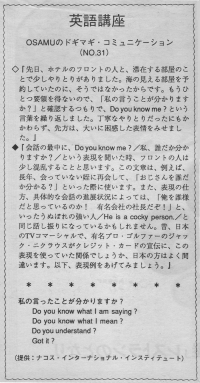

私の言うことがわかりますか。
The other day, Osamu had some discussion with the front desk clerk at his hotel. He made reservations for an ocean view room but the clerk didn't get the point so Osamu said "Do you know me?" But he really intended to say "Do you know what I mean?" Although that discussion was polite, the clerk had a confused face. If you say something that confuses someone you should try to say it in another way. And if you don't understand something, you shouldn't just nod your head and smile. You should try to understand and say: "Could you say that again?" "What did you say?"
先日、ホテルのフロントの人と、滞在する部屋のことで少しやりとりがありました。海の見える部屋を予約していたのに、そうではなかったからです。もうひとつ要領を得ないので、「私の言うことが分かりますか？」と確認するつもりで、Do you know me? という言葉を繰り返しました。丁寧なやり取りだったにもかかわらず、先方は、大いに困惑した表情をみせました。
会話の最中に、Do you know me. という表現を聞いた時、フロントの人は少し混乱することと思います。この文章は、例えば、長年会っていない姪に再会して、「おじさんが誰だか分かる？」といった際に使います。また、表現の仕方、具体的な会話の進展状況によっては、「俺を誰様だと思っているのか！有名会社の社長だぞ！」といったうぬぼれの強い人／He is a cocky person.／と同じ話し振りになっているかもしれません。昔、日本のTVコマーシャルで、有名プロ・ゴルファーのジャック・ニクラウスがクレジット・カードの宣伝に、この表現を使っていた関係でしょうか、日本の方はよく間違います。以下、表現例をあげてみましょう。
私の言うこと、わかりますか？
Can you understand what I´m saying?
Can you understand me?
私の言うこと、わかるでしょ！ ね！
Do you know what I am saying?
私の言うことわかる？
Do you know what I mean?
わかった！？
（少し怒っている時にも使います。イントネーションによる。）
Do you understand?
わかる？ わかった？
Got it?
For some reason, ¨Do you understand?¨ seems a little rude, like you think the other person should undertand what you´re saying but they don´t seem to be getting it. ¨Can you understand?¨ is more like, ¨Are you able to understand?¨ For this reason, ¨Do you understand?¨ has the feeling of the speaker being angry or irritated, especially if said in an irritated tone of voice. It could also be when the speaker is trying to get the agreement of the listener on some point. In this sense, it is kind of like, ¨You agree with me, don´t you?¨そうでしょう？ ¨Got it?¨ is very informal and is used only among close friends or by a superior to an inferior. It implies that I explained something to you and I want to make sure that you understand. 分かった？ (12/2006)

| © 1995-2013 NACOS International Institute. All Rights Reserved. |